Практическая часть по Компьютерной графике
Тема:
«Работа с инструментами программы MS Paint».
1.Выполнить
рисунок по образцу, используя основные инструменты MS Paint. «Работа с инструментами программы MS
Paint»
Откройте графический редактор Paint.
Нарисуйте жёлтого утёнка, дополните фон на изображении.
Дополнительное задание в Paint.NET
Нарисуйте в Paint.NET дольку
апельсина.
Далее предоставлен пример выполнения задания:
Как нарисовать дольку апельсина
На пустом слое, выбрав на панели
инструментов фигуру круг с контуром (20-30 пикс), создадим круг, нажимаем и
держим Shift (это сделает его ровным). Выберем инструмент
выделение-круг и заполним его градиентом, предварительно установив на палитре цвета.
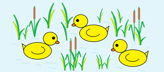
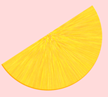
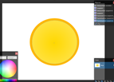
Практическая часть по Компьютерной графике
Не снимая выделения, сделаем еще раз
такой же круг и заполним черным цветом.
Добавим черному кругу шум. Не снимая выделения, размоем круг с шумом.
Получаем следующее:
Свойство слоя добавление:
Создадим прямоугольник и вырежем, а
также создадим фон:
Тема:
«Создание растрового изображения в программе MS Paint».
1.Выполнить
рисунок по образцу, используя основные инструменты MS Paint.
Создайте в MS paint иллюстрацию
«коробка подарков»
Дополнительная
работа в Paint.NET
Создание объёмного шара для боулинга.
Пример создания шара:
Для начала создадим квадратное
изображение, например, размером 400 на 400 пикселей.
Фоновый слоя оставим белым
и создадим еще один прозрачный слой, который заполним градиентом (инструмент
Paint.NET "градиент") из двух цветов. Делаем объект трехмерным
Для того что бы сделать трехмерным, в первую очередь вам нужно скачать дополнительный эффект к
Paint.NET "Трехмерное изображение" - Shape3D.
Параметры не так критичны, но
параметр "Object Rotation" по оси Y мы установили равным 30. Параметр
"Lighting" - "Direction" по оси X вместо -0,75 мы сделали
0,75. И параметр "Ambient Lighting" увеличили до 0,65. Создаем на шаре впадины под пальцы
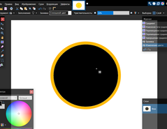
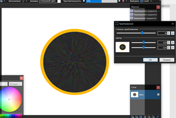
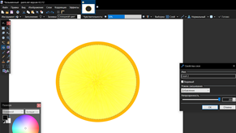
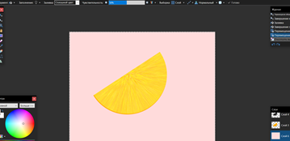
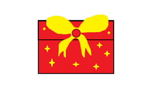
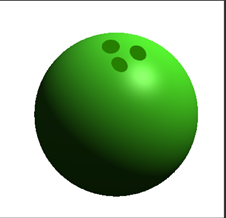
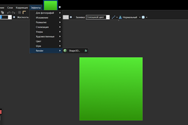
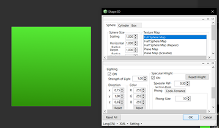